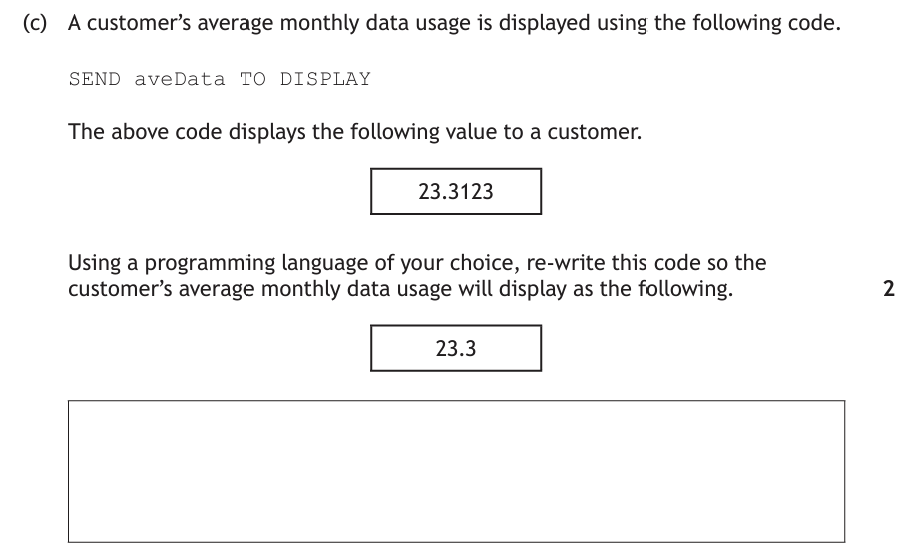
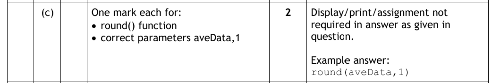
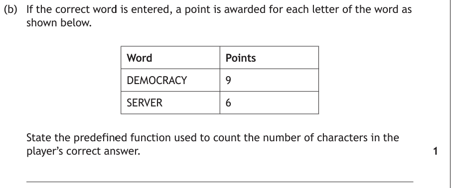
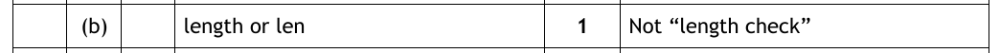
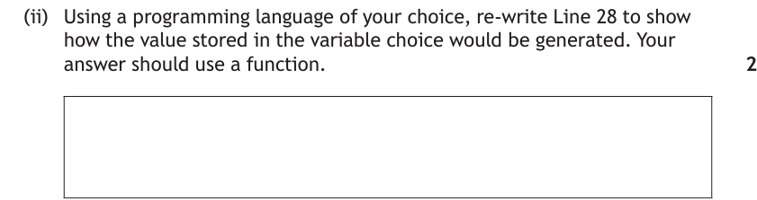
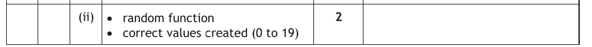

Introduction
Some jobs come up so often in programming — rounding a number, measuring a string, picking a random value — that Python has them built in. These are pre-defined functions: someone has already written the code, so you don't have to reinvent the wheel. You just call the function, hand it the values it needs, and catch the answer it gives back.
The values you hand over (inside the brackets) are the parameters, and the answer that comes back is the returned value — which you'll almost always store in a variable.
Learn the word parameter properly — exam questions use it directly, and marking instructions award marks for "correct parameters". In round(3.14159, 2) there are two parameters: the value to round, and the number of decimal places to keep. Choosing the right function is often only half the marks; the other half is getting its parameters right.
Key Terms
round(3.14159, 2).Round
round() tidies up real numbers. With one parameter it rounds to the nearest whole number; add a second parameter to say how many decimal places to keep:
num1 = round(3.14159265) print(num1) # 3 — nearest whole number num2 = round(3.14159265, 2) print(num2) # 3.14 — two decimal places num3 = round(3.14159265, 5) print(num3) # 3.14159 — five decimal places
Where do you actually use it? Money and averages, mostly. Any calculation involving division can spit out a monster like 15.333333333 — round(average, 2) makes it presentable:
average = total / 3
average = round(average, 2)
print("Average mark: " + str(average))
Here's exactly that skill in a real past paper question — write your own answer before opening the walkthrough.

How to tackle it: Compare the two outputs. 23.3123 has four decimal places; the target 23.3 has one. Trimming a real number to a set number of decimal places is exactly what round() is for — and the two marks are one for the function and one for its parameters:
- First parameter — the value to round: the variable
aveData. - Second parameter —
1, because the target has one decimal place.
Watch the traps: round the variable, not the number — round(23.3123, 1) only works for this one customer, and the program must work for them all. And don't drop the second parameter: round(aveData) on its own goes to the nearest whole number and would display 23.

An example would be:
round(aveData, 1)
The display statement was already given in the question, so SEND round(aveData, 1) TO DISPLAY and plain round(aveData, 1) both earn full marks.
Length
len() returns the length of a string — the number of characters in it. So len("hello") is 5, and len("abc") is 3. (Spaces count as characters too!)
# How many characters are in the word "hello"?
how_long = len("hello")
print(how_long) # 5
The classic use is checking a password is long enough — len() gives you a number, and a condition does the rest:
# Ask the user to enter a password
passwd = input("Please enter your password: ")
# The password must be more than 6 characters long
if len(passwd) > 6:
print("Your password is long enough")
else:
print("Your password is NOT long enough")
Later, this exact check gets upgraded into a loop that keeps asking until the password is long enough — that's input validation, one of the standard algorithms.
Length questions can be worth just one mark — but only if you name the function precisely. Try this one before opening the walkthrough.

How to tackle it: A point for each letter means the program must count the characters in the word — DEMOCRACY has 9, SERVER has 6, and that's exactly the points awarded. Counting the characters in a string is the length function's whole job, so the answer is length (len in Python).
Watch the trap: the marking instructions explicitly refuse "length check" — that's the name of a validation technique, not a function. When a question says "state the pre-defined function", name the function itself and nothing else.

The answer is:
length (accept len)
Random
Something random is open to chance — rolling dice, tossing a coin, shuffling cards. random.randint() returns a random integer between its two parameters (both ends included). One extra requirement: you must import random at the top of the program first.
# This program is going to use random numbers import random # Generate a random number from 1 to 6 — a dice roll dice = random.randint(1, 6) print(dice)
# This program is going to use random numbers
import random
# Ask the user to guess, then pick the answer
guess = int(input("What is your guess (1-10)? "))
target = random.randint(1, 10)
if guess == target:
print("Well done, you guessed correctly.")
else:
print("Sorry, you guessed wrongly. It was " + str(target))
import random line is the number one mistake with this function — the program crashes the moment it reaches random.randint(). First line of the program, every time.You've met this spelling game before — its processes on the Analysis page, its array of words on the arrays page. Now the same program needs a random word picked. Write your own Line 28 before opening the walkthrough.
![Past paper code for the spelling game: Line 27 REPEAT 20 TIMES. Line 28 SET choice TO a number between 0 to 19. Line 29 load selected sound file. Line 30 SEND sound file TO speaker. Line 31 RECEIVE usersWord FROM KEYBOARD. Line 32 IF usersWord = NOT storedWords index choice THEN. Line 33 SEND Sorry, the correct spelling is and storedWords index choice TO DISPLAY. Line 34 ELSE. Line 35 SEND Well Done TO DISPLAY. Line 36 SET correctGuesses TO correctGuesses + 1. Line 37 END IF. Line 38 END REPEAT. Line 39 SEND You guessed and correctGuesses and words correctly TO DISPLAY.](../resources/sdd/worked_examples/n5_predef_q1-1.png)

How to tackle it: Line 28 needs "a number between 0 to 19", picked fresh every time the loop runs — and the question even nudges us with "your answer should use a function". A value that's different every run is random, so the two marks are:
- The random function —
random.randint()in Python. - The correct values created — the parameters
0and19, the smallest and largest values allowed.
Why 0 to 19 and not 1 to 20? Because choice is used as an array index on line 32 — storedWords[choice] — and the 20 stored words live at indexes 0 to 19. Zero-indexing strikes again.
Watch the trap: randint includes both ends, so random.randint(0, 19) can produce 0 and can produce 19. Writing randint(1, 20) or randint(0, 20) creates the wrong values and loses the second mark.

An example would be (in Python):
choice = random.randint(0, 19)
The Function Machine
All three functions work the same way: parameters in, returned value out. Pick a function and a call, press Run, and watch the parameters drop into the hopper and the returned value land in the variable. The randint machine is genuinely random — run it a few times and see both end values appear.
Practice Questions
Each of these tests the same skill as one of the worked examples above. Write your answer down before opening the marking instructions.
A weather app displays a town's average monthly rainfall using the following code.
SEND aveRain TO DISPLAY
The above code displays the following value:
7.66666
Using a programming language of your choice, re-write this code so the average rainfall will display as the following.
7.67
Marking Instructions
One mark each for:
- the round() function
- correct parameters — aveRain, 2
Sample answer: round(aveRain, 2)
The target has two decimal places, so the second parameter is 2. Round the variable, not the number — round(7.66666, 2) only works for this one value. A display or assignment statement is not required.
A messaging app counts the number of characters in a message as it is typed, so the user knows when they are close to the 160-character limit.
State the pre-defined function used to count the number of characters in the message.
Marking Instructions
length (accept len) — 1 mark
Do not accept "length check" — that is a validation technique, not the name of a function. Spaces count as characters, which is why "length check" and counting by eye both go wrong.
A school fair sells 300 raffle tickets, numbered 1 to 300. Part of the program that picks the winner is shown below.
Line 12 SET winner TO <a number between 1 and 300> Line 13 SEND "The winning ticket is " & winner TO DISPLAY
Using a programming language of your choice, re-write Line 12 to show how the value stored in the variable winner would be generated. Your answer should use a function.
Marking Instructions
One mark each for:
- the random function
- correct values created — 1 to 300
Sample answer (Python): winner = random.randint(1, 300)
Both parameters are included in the range, so randint(1, 300) can produce ticket 1 and ticket 300. Unlike the spelling game, the tickets are numbered from 1 — the parameters must always match the values the question asks for, not a memorised pattern.